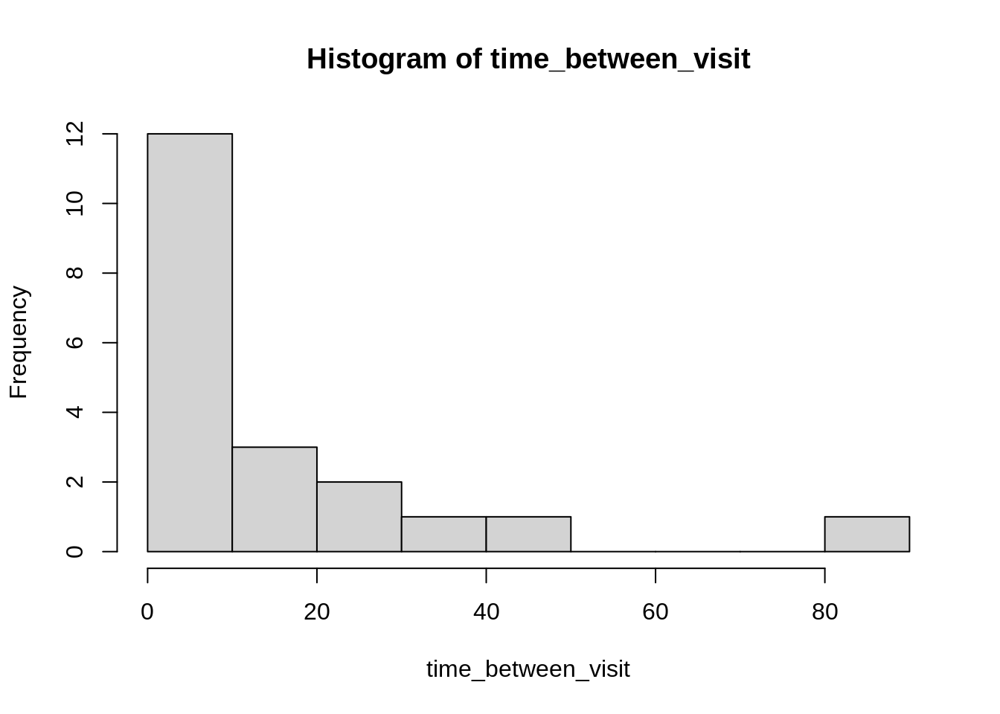
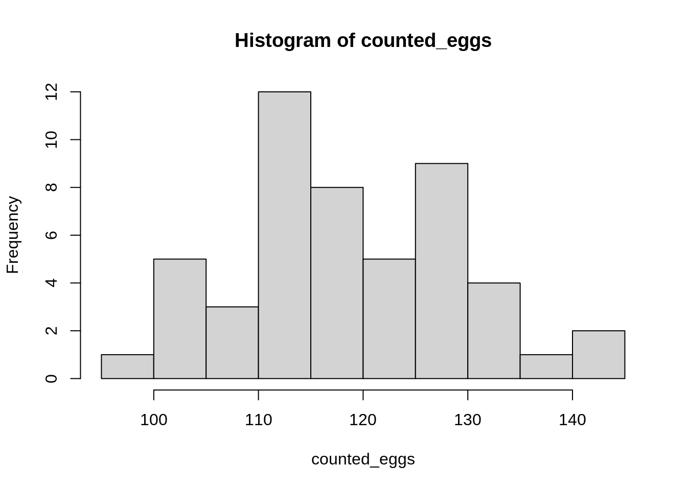
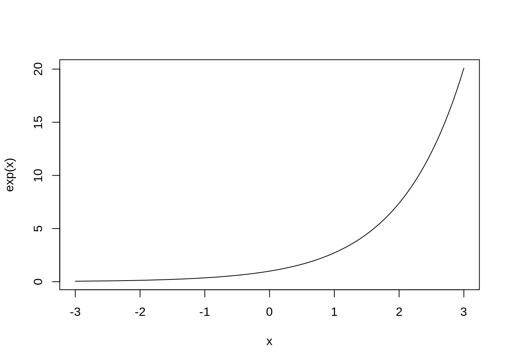
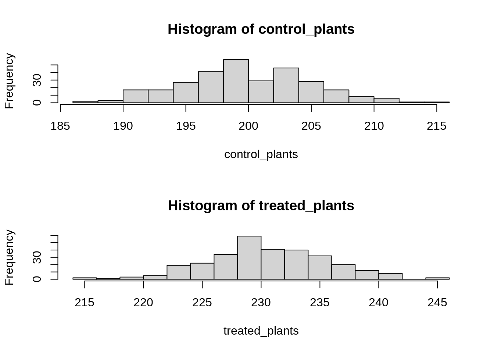
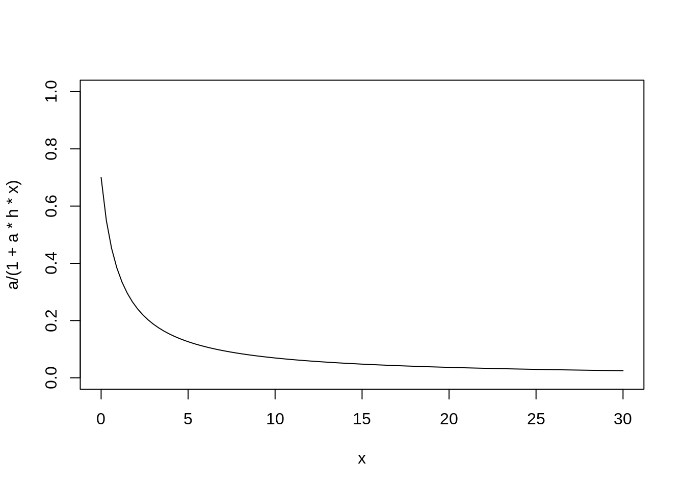

At-home Statistical Workout 💪💪💪💪
Andrew
knitr::opts_chunk$set(echo = TRUE)Here are some suggested ideas for how to work out your likelihood skills!
They are divided into three sections: one, two and three parameters.
NOTE remember to consult the slides above for a step-by-step pseudocode approach
To do an exercise: copy and paste the R code into an R source file. Run it, then work with the data.frame it creates!
One parameter
One-parameter exponential distribution
You are watching a female bird visiting her nest, bringing back food for nestlings. Every time she comes back you write down the number of minutes since the last visit. You watch for 20 consecutive visits. This species brings food once every 10 minutes, so six times an hour, and visits are prefectly random. This implies an Exponential distribution with a rate of \(6\text{visits} / 60\text{minutes}\) so in other words \(0.1\) visits per minute. Use maximum likelihood to confirm this number
visit_rate <- 6/60
set.seed(1859)
time_between_visit <- rexp(20, rate = visit_rate)
bird_visits <- data.frame(times = time_between_visit)
hist(time_between_visit)
Questions / thoughts:
- Begin by trying only positive numbers in your algorithm.
- Run the the following
rexp(1, -1). What happens? Why? - How would you constrain your algorithm to use only positive numbers?
Monarch Butterfly numbers
You are concerned about Monarchs, so you’ve decided to count their eggs! You look on 50 milkweed plants in your neighbourhood to find them. The eggs follow a perfect Poisson distribution with a mean of 120 eggs per plant.
mean_eggs <- 120
set.seed(1859)
counted_eggs <- rpois(50, mean_eggs)
egg_data <- data.frame(counted_eggs)
hist(counted_eggs)
You want to use Maximum Likelihood to look at this distribution. You want to be extra careful, so you want to do it two ways.
First, you try to fit a Poisson distribution like this:
\[ \text{eggs} \sim \text{Poisson}(\lambda) \]
you do this by searching over values of lambda between 1 and 200
Lambda can’t be 0 or negative. You decide to replace the value of \(\lambda\) with a function that is always greater than 0:
\[ f(x) = e^x \]
curve(exp(x), xlim = c(-3, 3))
Since this function is always positive, and \(\lambda\) is always positive, you decide to put the function in for the \(\lambda\) of the Poisson:
\[ \text{eggs} \sim \text{Poisson}(e^x) \]
Questions:
- Now what values should you use for \(x\) ?
- Are your answers from the two methods the same?
Difference between two normal distributions (part I)
You add some fertilizer to plants, because experiments. This makes the plants grow more on average, because physiology. At the end of your experiment, you cut all the plants down and measure their dry biomass, because tradition.
As a skilled botanist, you know that the standard deviation of the control plots will be exactly 5g, and the standard deviation of the treatment plants will be *exactly the same. You know that plants are on average 200g, and the fertilizer should increase this by 30g (a 15% increase).
real_difference <- 30
set.seed(1859)
control_plants <- rnorm(300, mean = 200, sd = 5)
treated_plants <- rnorm(300, mean = 200 + real_difference, sd = 5)
plant_growth <- rbind(
data.frame(treatment = 0, mass = control_plants),
data.frame(treatment = 1, mass = treated_plants)
)
par(mfrow = c(2,1))
hist(control_plants, breaks = 15)
hist(treated_plants, breaks = 15)
par(mfrow = c(1,1))Questions
- What is the likelihood for the observations? Consider that you know the control mean (\(\mu\)), the standard deviation (\(\sigma\)). What is missing? Call this missing quantity \(\alpha\).
- Use maximum likelihood to confirm that the difference is really 30g
Difference between two normal distributions part (II)
The fertilizer makes plants grow, but affects different plants differently, because genetics.
As a VERY skilled geneticist, you know that the standard deviation of the control plots will be exactly 5g, but now you also know the standard deviation of the treatment plants will be exactly 9g. You know that plants are on average 200g, and the fertilizer should increase this by 30g (a 15% increase).
real_difference <- 30
set.seed(1859)
control_plants2 <- rnorm(300, mean = 200, sd = 5)
treated_plants2 <- rnorm(300, mean = 200 + real_difference, sd = 9)
plant_growth2 <- rbind(
data.frame(treatment = 0, mass = control_plants),
data.frame(treatment = 1, mass = treated_plants)
)
par(mfrow = c(2,1))
hist(control_plants2, breaks = 15)
hist(treated_plants2, breaks = 15)
par(mfrow = c(1,1))Questions
- What is the likelihood for the observations? Consider that you know the control mean (\(\mu\)), the control standard deviation (\(\sigma_c\)) and the treatment standard deviation (\(\sigma_t\)). How is this different from the first equation?
- Use maximum likelihood to confirm that the difference is really 30g
- Is the likelihood profile different from the first exercise? that is, does the plot of likelihood values (y axis) against parameter values (x axis) look the same?
Two parameters
The following two examples are lifted from Bolker , page 182
Consider some tadpoles, who live a difficult life. They are in an experiment where they are kept at different densities. The experimenter introduces a predator to the container with the tadpoles, and observes as the predator kills tadpoles.
The experiment has six treatments: 5, 10, 15, 20, 25, 30 tadpoles per tank, and 5 tanks per treatment.
Predators can feed more when prey density is higher, but sometimes slow down when the prey get to very high densities. In a classic Type II functional response, this is modelled with two numbers. First, a predator species has some constant attack rate \(a\) – they only need to eat so much per unit time. Second, they must “handle” each prey item (kill, digest, etc) before attacking another. This handling time creates the slowdown in attack: no matter how many prey there are, they still take the same effort to catch, kill, and digest.
The Type II functional response is written as:
\[ f(N) = \frac{a}{a + ahN} \]
- \(a\) is the attack rate
- \(h\) is handling time
- \(N\) is the number of prey
This equation produces a per capita rate of predation: the proportion of prey killed by one predator in a unit of time.
Play with this equation in R, using curve(), and modify values of a and h.
a <- 0.7
h <- 1.3
curve(a/(1 + a*h*x), xlim = c(0,30), ylim = c(0,1))
Convince yourself that the output is always between 0 and 1. Are there any constraints on the parameters? Think about how you will handle that in your Maximum Likelihood search.
At the end of the experiment, the scientist comes back and measures how many tadpoles were killed in each treatment, out of the total number originally placed in that tank. What probability distribution would you use for these data? Where do you place the functional response equation explored above?
Part 2
Simulate some data with known parameters for \(a = 0.6\) and \(h = 0.3\)
a <- 0.7
h <- 1.3
rbinom(5,prob = a/(1 + a*h*10), size = 10)## [1] 1 0 1 2 1(to be continued!)